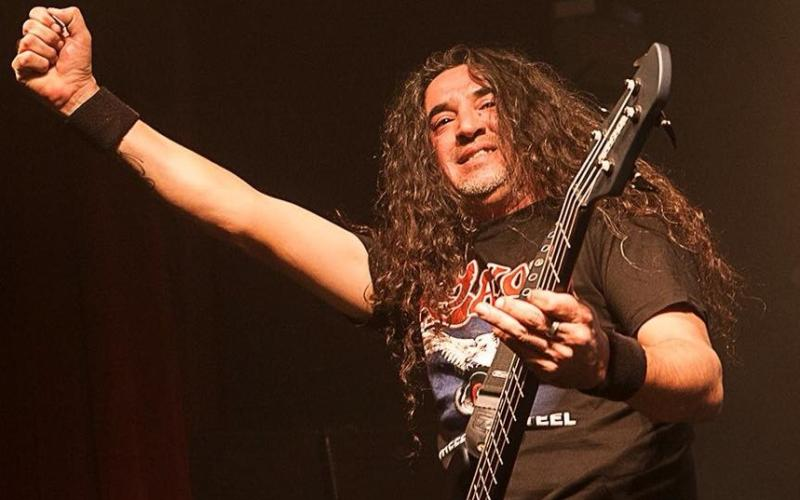
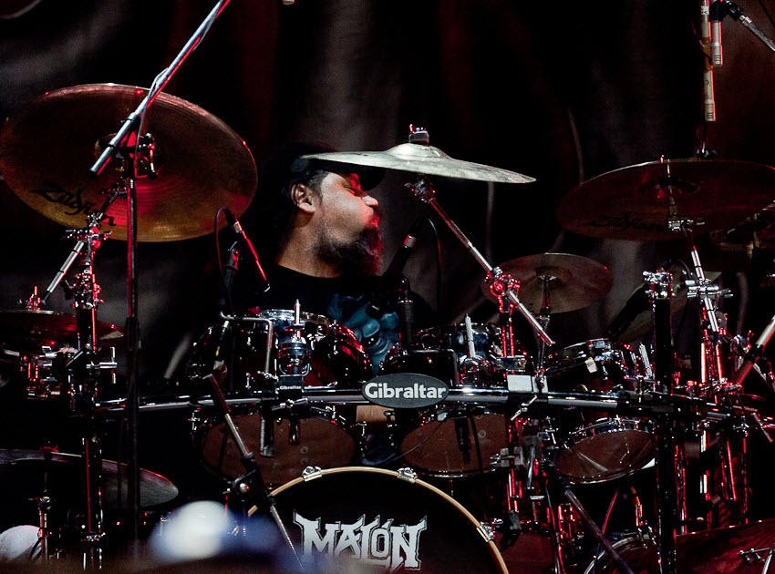

Malón

Bibliografía
Malón es una banda argentina de heavy metal fundada en 1995 por Claudio O'Connor, Claudio Strunz y Antonio Romano junto con el bajista Karlos Cuadrado luego de la separación de Hermética.

Integrantes:
Claudio O'Connor (Voz)

Antonio Tano Romano (Guitarra)

Karlos Cuadrado (Bajo)
Claudio Strunz (Bateria)
